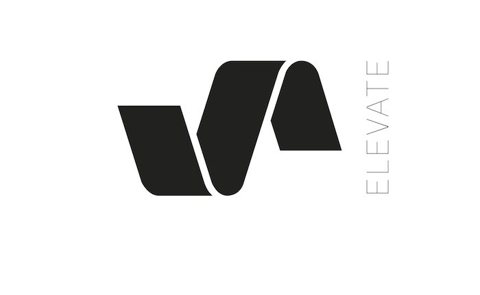

Cut From the Catalog: Elevate Music


Record labels have long been the gatekeepers of the dance music space, as they continuously define and reshape tastes via releases, endless talent scouting, and the curation of brand-hosted parties. In our Cut From the Catalog series, we big-up established and buzzing imprints alike, by taking a look at the organization’s ops while running through a retrospective mix built solely from their respective catalogs.
The career of Pig & Dan arguably counts among the most prolific, diverse and successful of anyone in dance music—from the progressive bangers beloved by the likes of Sasha and Digweed early in their 15-year career to the techno destroyers that’ve more recently earned them the respect of Sven Väth, and from the magic studio touch they’ve added to Adam Beyer’s music to their upcoming summer anthems with German stalwart Monika Kruise.
However, for Igor Tchkotoua (aka Pig) and Dan Duncan, the most important thing among all this enormous dancefloor success is their own Elevate label.
“Elevate has been growing organically over the last three years, pushing artists that—while they might not be so well known in the dance world—they produce music that we truly believe in, because of its ability to stick out and really get under our skin,” the duo told us during a catchup.
Reflective of the duo’s enduring success (and evidence of the fact they’ve been around the dancefloor more than a few times), Elevate actually represents the sixth label they’ve gotten behind over the course of their career. However, this one represents the first time they’ve been able to get the recipe just right for enduring success in the digital era.
“Because of the fact that we had the wrong team members in the past, we always had to close and open something new. Elevate is the first time we’ve managed to have a team that’s truly professional and transparent with us.”
Pig & Dan spoke of wanting to develop a “new sound” upon the label’s launch in 2012. We decided to sit down with them to find out about the behind-the-scenes details of what goes into running a record label in 2017. After all, Elevate is home to the music championed by one of the most consistently successful DJ/producer duos working in house and techno.
It’d be an understatement to say that things are going rather well for Pig & Dan at the moment. What do you have planned on the label side of things for this year?
We are still pushing the envelope with artists like David Bau, Uakoz, DAST, and Etai Tarazi—but we’re also honored to add a few more well-known names to the team. Look out for some killer EPs from the likes of Victor Ruiz, Fer BR, HOBO, Amelie Lens, and Carlo Ruetz.
What was the inspiration behind the launch of Elevate?
Our inspiration was recognition for producers that perhaps might not have a name or branding, and we truly feel need to be heard. Our label manager, Scott Dawson, is unbeatable as far as knowledge and experience goes. He runs top labels like Intec and Bedrock, and we adore working together with him because he really holds a pure passion for music that we believe in.
You’ve certainly been working within the digital era, and the old days of massive physical sales are well and truly over. What’s it like operating in this environment?
It’s all about adapting. The tables have turned completely around. We used to DJ to promote the records we sold physically on vinyl, and that was how we earned money to survive. Now, you release records to push your name as a DJ, because the experience of watching a DJ live in the club is something that you can’t download. And now, when you release a digital record, most people take it for free. In fact, it’s said that for every track sold, 10 people download it for free.
What people don’t realize is that artists can’t survive if you take their product for free and don’t show financial support. Pig & Dan are truly privileged, because we’re booked globally as DJs—though there’s struggling artists out there who have to fight and starve for their survival, just as we did for many years. The difference, though, is that we sold physical records back then.
What was your vision when you launched the label, and how much has this evolved?
We both felt that techno music can sound extremely generic. Musically speaking, our label is about music that’s not generic and features something unique and recognizable—the records that we personally like to spin. We wanted to break away from “just another beat” and push music with substance and depth. There’s a lot of melody, though without any hints of cheese.
Who would you say have been the key artists who have been featured on Elevate?
That’s a hard question, because we truly believe in all those who have blessed our label with their music. If I had to point fingers at those who truly embraced the sound we really drive for, I would say Etai Tarazi, UAKOZ, Victor Ruiz, David Bau, DAST, and M.I.T.A.
Did you want to explore this versatility with the label, or were you more interested in being focused in the sound you were working with?
I think it’s clear we are non-linear with the label’s sound. However, we do have a clear direction. The releases are powerful and melodic and hold a high standard of sonic production. I think as producers ourselves, we’re often very hard to pinpoint as far as genres go, though people do claim we have a sound that’s easily recognizable. We’ve written techno, tech house, jazz, reggae, soul and more—and released all of it, too—so it’s safe to say we are wild cards, musically. Elevate definitely offers more a refined and streamlined sound, genre-wise.
Elevate has been home to much of your own music the past few years, though you’ve also continued to release on plenty of other big stables like Cocoon, Bedrock and Suara. What inspires you to release your music on Elevate in particular?
We very much go with the flow. Things kind of slip into place, as we are experimentalists—both in the studio and with the labels that we work with. When we start to write a track, we don’t have any concept in mind; we just go with it. When we finish a record, then we analyze it and send it to the labels that we feel it could sit well on. This goes for Elevate as well, in terms of if we feel the track fits the particular sound of the label well, this is where we will place it.
You’ve never had trouble getting your music published on big record labels. Is your own label still essential when you’re that successful as producers?
Absolutely. We are super lucky to have worked with some of the best labels on earth. However, we will always release records on our own imprint if we feel they fit the criteria. It comes down to the “sound of the record” and whether it’s better matched for Elevate or Drumcode.
Labels should have a direction, and I think if you look at the history of labels such as Drumcode or Minus, for example, they really have a very clear-cut direction. Adam Beyer and Richie Hawtin are both perfectionists and really know what direction they want their labels to project, musically. They’re recognizable brands because of that clarity, and we hope to achieve that kind of status with Elevate in the long run. As far as upcoming Pig & Dan releases go, we’ve got our next Elevate release scheduled for June; it’s called Starting Again.
Elevate Music Cut From the Catalog Track List:David Bau “With Your Eyes Closed”
Emery Warman “Beat March”
Wehbba “The Observer”
Martin Lacroix “Reset”
Etai Tarazi “Love Like Anthrax“
Whyt Noyz “Russian Doll”
Philip Bader “The Trip”
Amelie Lens “Nel”
Rob Hes, LAAT “Buck the System”
Sezer Uysal “Murk”
Sama “Disconnected"
Fideles “Wunderlust”
Follow Pig & Dan on Facebook | Twitter | SoundCloud
Follow Elevate Music on SoundCloud